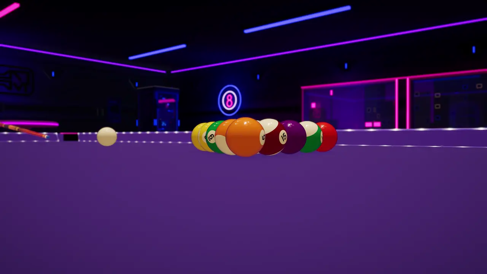
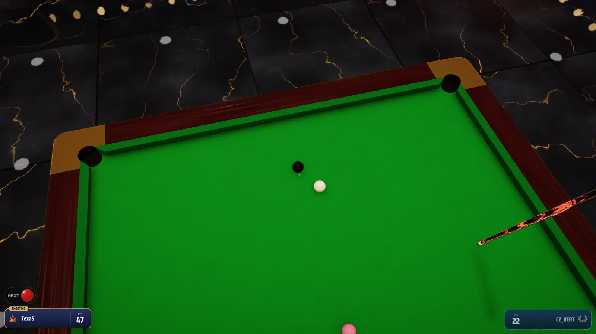
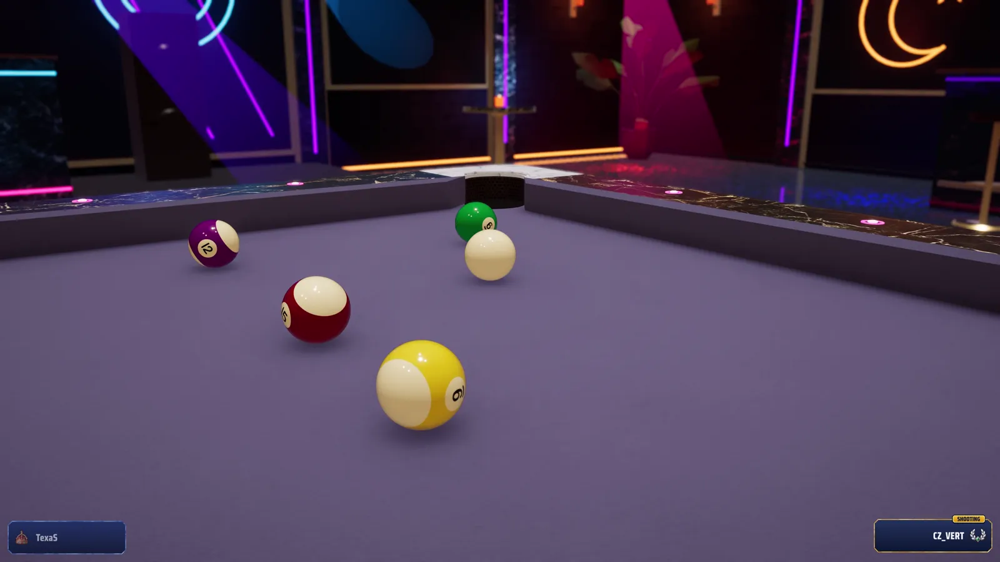
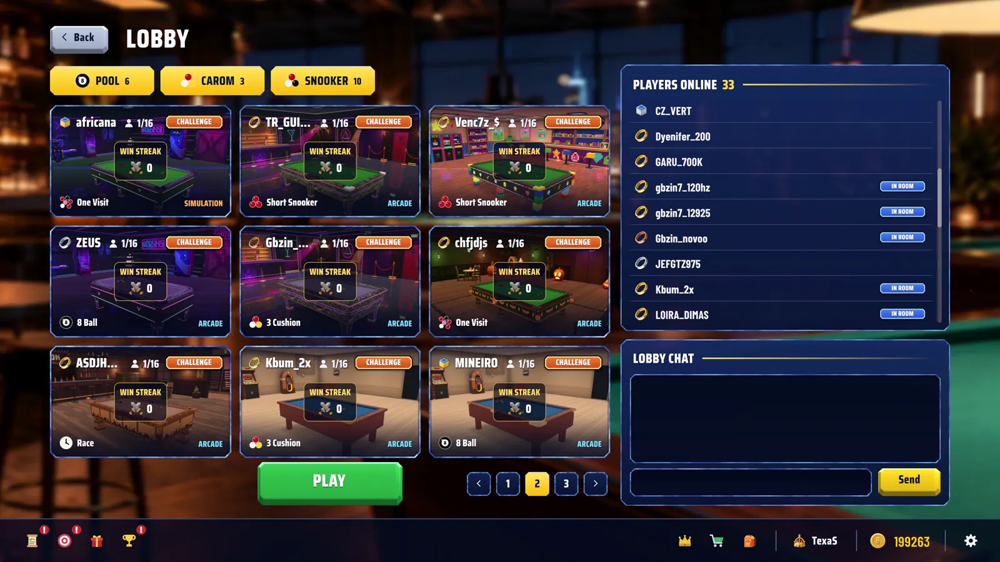
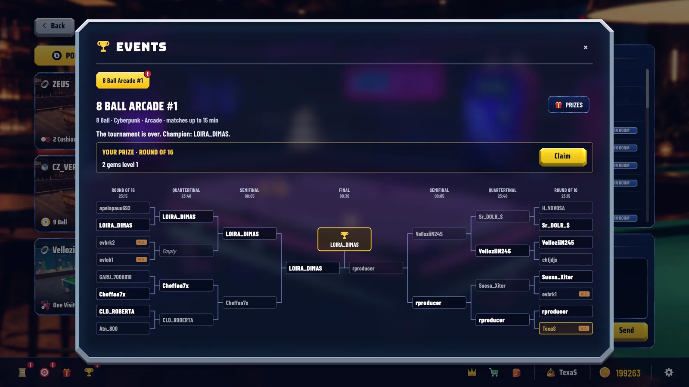
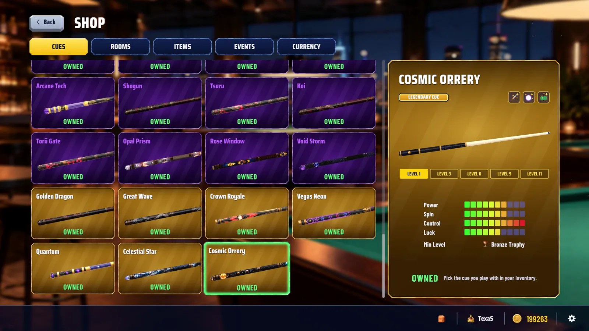
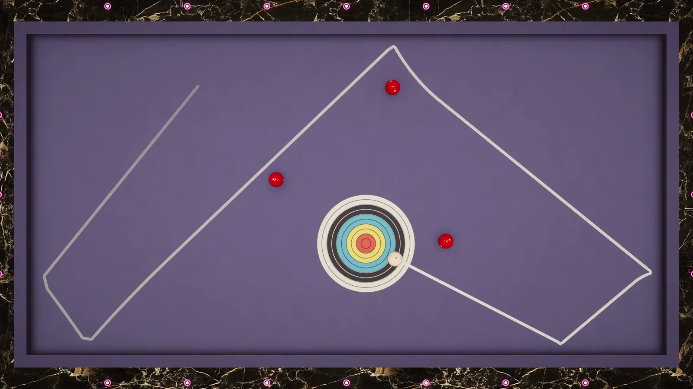
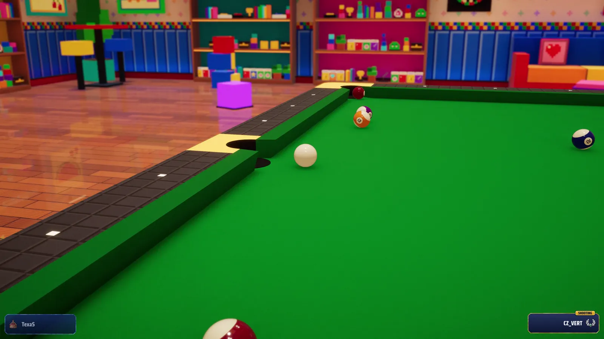

Sinuca, snooker e carambola num jogo só. Online, com física de verdade.
Baixar grátis para WindowsVeja o Go Pool em ação
Tudo o que a mesa pode oferecer
Pool, snooker e carambola com a mesma física de simulação, num lobby onde você joga, assiste e conversa com gente do mundo todo.

Pool, snooker e carambola
Do 8 Ball ao Three Cushion, passando pelo snooker, com novos jogos chegando sempre. Escolha o seu e jogue no modo Arcade ou Simulation.

Física realista
Efeito, massé, salto e tabelas se comportam como numa mesa de verdade.

Online de verdade
Jogue contra gente do mundo todo, 24 horas por dia. Crie sua sala ou entre numa partida rápida contra alguém do seu nível.
- Suba de nível e chegue ao Hall of Fame
- Quanto mais difícil o jogo, mais pontos você ganha
- Salas com chat, espectadores e partidas em times

Torneios o dia todo
Sempre tem um torneio começando: mata-mata, prêmios e título para o campeão.

Tacos para evoluir
Cada taco tem atributos próprios e sobe de nível com gemas, mudando de visual pelo caminho. Vários tacos têm efeitos especiais únicos.

Desafios todo dia
Todo dia tem missões novas e desafios de trickshot para testar sua mira, além de conquistas para colecionar.

Salas temáticas
Cassino, Cyberpunk, Halloween, Nightclub, Aquário, Saloon e muitas outras. Cada sala tem sua própria rádio, com uma trilha que combina com o clima do lugar.
Baixe e jogue agora
O Go Pool é grátis. Depois de instalado, ele se atualiza sozinho.
Baixe o arquivo .zip pelo botão acima.O Google Drive pode avisar que não conseguiu verificar o arquivo por ser grande. É só clicar em "Fazer o download mesmo assim".
Extraia o .zip numa pasta.Clique com o botão direito no arquivo e escolha "Extrair tudo".
Abra o Go Pool.exe e crie sua conta.Se o Windows mostrar "O Windows protegeu o computador", clique em "Mais informações" e depois em "Executar assim mesmo".
- Sistema
- Windows 10 ou 11 (64 bits)
- Internet
- Necessária para jogar online
- Idiomas
- Português, inglês e espanhol